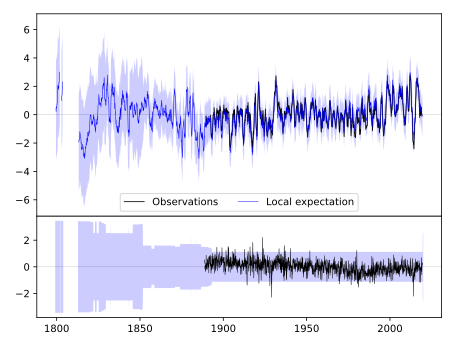
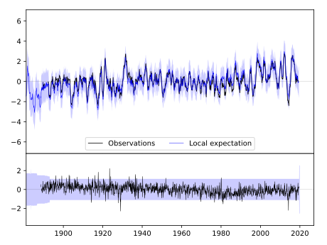
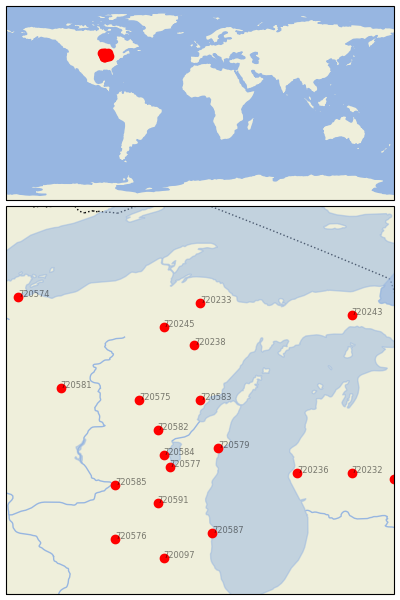

OCONTO 4 W [USA]


| Neighbour | Name | Country | Distance | Lon/Lat | Years |
|---|
| 720583 | OCONTO 4 W | USA | 0 | -88.0, 44.9 | 1888-2019 |
| 720582 | NEW LONDON | USA | 78 | -88.7, 44.4 | 1856-2019 |
| 720575 | BOWLER | USA | 78 | -89.0, 44.9 | 1893-2019 |
| 720579 | MANITOWOC | USA | 92 | -87.7, 44.1 | 1851-2019 |
| 720238 | IRON MT KINGSFORD WW | USA | 100 | -88.1, 45.8 | 1893-2019 |
| 720584 | OSHKOSH | USA | 110 | -88.6, 44.0 | 1871-2019 |
| 720577 | FOND DU LAC | USA | 128 | -88.5, 43.8 | 1871-2019 |
| 720245 | STAMBAUGH 2SSE | USA | 141 | -88.6, 46.1 | 1893-2019 |
| 720233 | CHAMPION VAN RIPER P | USA | 177 | -88.0, 46.5 | 1893-2019 |
| 720581 | MEDFORD | USA | 182 | -90.3, 45.1 | 1890-2019 |
| 720236 | HART 3 WSW | USA | 184 | -86.4, 43.7 | 1886-2019 |
| 720585 | PORTAGE | USA | 191 | -89.4, 43.5 | 1890-2019 |
| 720591 | WATERTOWN | USA | 197 | -88.7, 43.2 | 1871-2019 |
| 720232 | BIG RAPIDS WTR WKS | USA | 239 | -85.5, 43.7 | 1887-2019 |
| 720587 | RACINE | USA | 245 | -87.8, 42.7 | 1855-2019 |
| 720243 | NEWBERRY 3S | USA | 249 | -85.5, 46.3 | 1891-2019 |
| 720576 | BRODHEAD | USA | 279 | -89.4, 42.6 | 1893-2019 |
| 720242 | MT PLEASANT UNIV | USA | 292 | -84.8, 43.6 | 1887-2019 |
| 720097 | MARENGO | USA | 293 | -88.6, 42.3 | 1856-2019 |
| 720574 | ASHLAND EXP FARM | USA | 299 | -91.0, 46.6 | 1894-2019 |